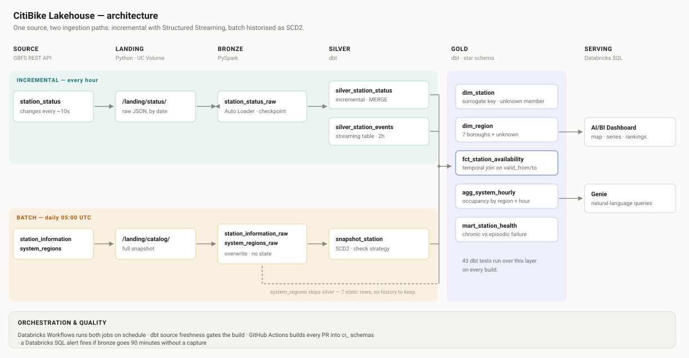

Data Engineering
CitiBike Lakehouse
Lakehouse over live Citi Bike NYC data on Databricks. The same source enters through a streaming path and a batch path, and ends in a dimensional model built with dbt.
- Runs every hour with Databricks Workflows. 44 dbt tests run on every build, and CI runs on every pull request.
- A range test caught a station whose capacity dropped from 39 to 1. The build stopped before that number reached the dashboard.
- Databricks
- PySpark
- Structured Streaming
- Delta Lake
- dbt
- GitHub Actions